Climate Departure for the Kootenay Lake Region
Source:vignettes/kootenay-lake.Rmd
kootenay-lake.RmdThe cd package builds on ERA5-Land hourly reanalysis
(1950–present, ~9 km native grid) fetched from the DestinE Earth Data
Hub, aggregated to monthly, seasonal, and annual periods over British
Columbia, and published as Cloud-Optimized GeoTIFFs alongside a static
STAC catalog in a public S3 bucket. R consumer functions read those
GeoTIFFs directly via GDAL, crop to any area of interest, and compute
baselines, anomalies, and Mann-Kendall / Theil-Sen trend statistics.
This vignette runs the consumer pipeline on a four-watershed-group
area in the southern interior of British Columbia: Kootenay Lake
(KOTL), Lower Arrow Lake (LARL, which covers
Trail / Rossland / Red Mountain at its south end), Duncan Lake
(DUNC, draining the north end of Kootenay Lake including
the Lardeau valley), and Slocan River (SLOC, between the
Selkirks and Monashees). The four watershed groups together total
~24,000 km² and span the east-west precipitation gradient that defines
the snowpack story for the region — Selkirk Pacific spillover west of
Kootenay Lake, Purcell rain shadow east.
Area of Interest
The bundled area of interest is the union of the four watershed
groups (single multi-polygon, EPSG:4326). Any sf polygon
works. The watersheds in this region all drain to the Columbia River —
Kootenay Lake feeds the Kootenay River which joins the Columbia at
Castlegar; the Slocan and Lower Arrow drain directly into the
Columbia.
We also carry British Columbia ecoregions through the analysis. Ecoregions partition the province into broad climate-physiography zones based on latitude, elevation, and dominant vegetation. Climate departure can vary across them in ways the regional average hides, and we use them later as the sub-region for the per-ecoregion breakdown.
library(cd)
library(sf)
aoi <- st_read(
system.file("extdata", "example_aoi_kootenay_lake.gpkg", package = "cd"),
quiet = TRUE
)
area_km2 <- as.numeric(sum(st_area(st_transform(aoi, 3005)))) / 1e6
aoi_bb <- st_bbox(aoi)
ggplot() +
geom_sf(data = ecoregions, aes(fill = name_tc), color = "grey45",
linewidth = 0.3, alpha = 0.45) +
geom_sf(data = aoi, fill = NA, color = "#2166ac", linewidth = 0.8) +
geom_sf(data = lakes, fill = "#a6bddb", color = "#74a9cf", linewidth = 0.2) +
geom_sf(data = rivers, fill = "#a6bddb", color = "#74a9cf", linewidth = 0.2) +
geom_sf(data = streams, color = "#74a9cf", linewidth = 0.3, alpha = 0.6) +
geom_sf(data = highways, color = "#333333", linewidth = 0.5) +
geom_sf(data = towns, color = "black", size = 2.5) +
ggrepel::geom_label_repel(
data = towns,
aes(label = name, geometry = geom),
stat = "sf_coordinates",
size = 3.2, fill = "white", alpha = 0.85,
label.padding = unit(0.2, "lines"),
min.segment.length = 0
) +
scale_fill_brewer(palette = "Set3", name = "Ecoregion") +
guides(fill = guide_legend(nrow = 2, byrow = TRUE)) +
coord_sf(
xlim = c(aoi_bb["xmin"] - 0.4, aoi_bb["xmax"] + 0.4),
ylim = c(aoi_bb["ymin"] - 0.5, aoi_bb["ymax"] + 0.3)
) +
labs(title = "Kootenay Lake Region",
subtitle = paste0(round(area_km2), " km^2 — ", nrow(ecoregions), " ecoregions")) +
theme_minimal(base_size = 12) +
theme(axis.title = element_blank(),
legend.position = "bottom",
legend.text = element_text(size = 8),
legend.title = element_text(size = 9),
legend.key.size = unit(0.4, "cm"))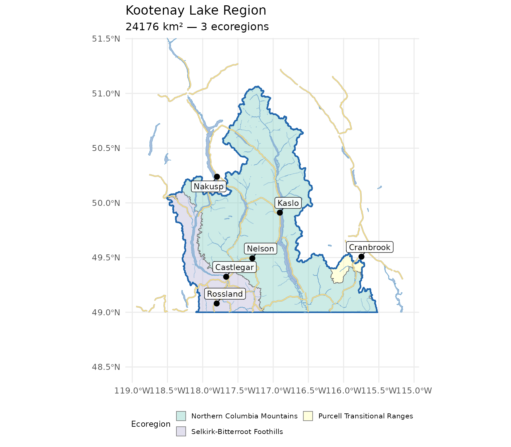
Kootenay Lake Region area of interest (~24,000 km^2) in southern interior British Columbia, coloured by ecoregion. Kootenay Lake dominates the basin; Lower Arrow Lake and the Slocan are visible to the west.
Connect to the Data Catalog
The producer pipeline in this repository fetches ERA5-Land hourly reanalysis data, derives variables (vapour pressure deficit, relative humidity, soil moisture), aggregates to monthly / seasonal / annual, and writes Cloud-Optimized GeoTIFFs to S3. Alongside the GeoTIFFs we publish a static SpatioTemporal Asset Catalog (STAC) — a small set of JSON files that index the assets. Both the GeoTIFFs and the catalog JSON live at https://stac-era5-land.s3.us-west-2.amazonaws.com/catalog.json.
cd_catalog() reads that URL by default. The
Cloud-Optimized GeoTIFFs are also usable directly outside R — for
example, in QGIS via the STAC plugin, in gdalcubes, or with
any STAC-aware client.
catalog <- cd_catalog()
kableExtra::kable_styling(
knitr::kable(catalog, label = NA,
caption = "Available climate variables and periods in the STAC catalog."),
bootstrap_options = c("striped", "hover", "condensed")
) |>
kableExtra::scroll_box(height = "320px")Extract Climate Time Series
cd_extract() crops each cloud-hosted GeoTIFF to the area
of interest and computes the spatial mean per year. For an area of
interest of this size a live extraction takes a few seconds per
variable. To keep the vignette fast and reproducible we load a
pre-computed result of exactly that call.
# In a fresh interactive session, you would compute this with:
# ts <- cd_extract(catalog, aoi)
# Below we load the pre-computed equivalent so the vignette renders
# without hitting the network. ts is the time series tibble; bl_early,
# ano, trn, cmp, and cmp_pct are the downstream products.
vignette_data <- readRDS(system.file(
"vignette-data", "kootenay_lake.rds", package = "cd"
))
ts <- vignette_data$regional$ts
bl_early <- vignette_data$regional$bl
ano <- vignette_data$regional$ano
trn <- vignette_data$regional$trn
cmp <- vignette_data$regional$cmp
cmp_pct <- vignette_data$regional$cmp_pct
knitr::kable(head(ts, 10),
caption = "First 10 rows of the extracted climate time series.")| variable | period | year | value |
|---|---|---|---|
| prcp | annual | 1950 | 1097.1773 |
| prcp | annual | 1951 | 1046.8338 |
| prcp | annual | 1952 | 737.0764 |
| prcp | annual | 1953 | 1222.3778 |
| prcp | annual | 1954 | 1274.0266 |
| prcp | annual | 1955 | 1124.7121 |
| prcp | annual | 1956 | 1075.2880 |
| prcp | annual | 1957 | 944.5439 |
| prcp | annual | 1958 | 1094.4144 |
| prcp | annual | 1959 | 1226.6316 |
Trends
Anomalies are computed against a pre-warming reference period — 1951–1980, the three decades before climate change accelerated. This is the same base period Hansen et al. (2012) use to detect the emergence of 3-sigma summertime-temperature outliers globally. Saying a year is “+1.5 °C” means it was 1.5 °C warmer than the average year between 1951 and 1980.
The trend table that follows has two rows per variable. We compute trends from two different start years:
- 1951–present (75 years) — the long view. Captures the full magnitude of warming since the pre-warming reference.
- 1981–present (45 years) — starts at the beginning of the World Meteorological Organization’s most recent 30-year “climate normal” (1981–2010) (Arguez and Vose 2011). This is the reference period used in most published climate products, so it makes results easy to compare against Intergovernmental Panel on Climate Change reports and government climate summaries.
Comparing the two slopes is informative. If the 45-year slope is steeper than the 75-year slope, warming has accelerated — recent decades are heating faster than the long-term average. If the 45-year slope is shallower, warming has slowed (though “slower” almost never means “stopped”). When the two slopes are similar, the rate of change has been roughly steady across the full record.
Total Change is the slope multiplied by the number of years — the cumulative shift over the trend window.
# Equivalent to:
# bl_early <- cd_baseline(ts, baseline_years = 1951:1980)
# ano <- cd_anomaly(ts, bl_early)
# trn <- cd_trend(ano, trend_start = c(1951, 1981))
kableExtra::kable_styling(
knitr::kable(cd_summary(trn), label = NA,
caption = "Trend statistics for all variables and periods, Kootenay Lake Region."),
bootstrap_options = c("striped", "hover", "condensed")
) |>
kableExtra::scroll_box(height = "320px")| Parameter | Period | Slope | Years | Total Change | Unit | p-value |
|---|---|---|---|---|---|---|
| Precipitation | Annual | -0.120 | 75 | -9.0 | % | 0.0206 |
| Relative humidity | Annual | -0.040 | 75 | -3.0 | % | 0.0006 |
| Snow cover | Annual | -0.073 | 75 | -5.5 | % | 0.0004 |
| Snowfall | Annual | -0.272 | 75 | -20.4 | % | 0.0057 |
| Snowfall fraction | Annual | -0.102 | 75 | -7.7 | % | 0.0038 |
| Snowmelt | Annual | -0.254 | 75 | -19.0 | % | 0.0038 |
| Day of 50% melt | Annual | -0.200 | 75 | -15.0 | day | 0.0003 |
| Peak weekly melt rate | Annual | -0.225 | 75 | -16.9 | mm/wk | 0.0316 |
| Soil moisture | Annual | -0.029 | 75 | -2.2 | % | 0.0404 |
| Snow water equivalent | Annual | -0.376 | 75 | -28.2 | % | 0.0013 |
| Annual peak snow water equivalent | Annual | -1.650 | 75 | -123.7 | mm | 0.0042 |
| Maximum temperature | Annual | 0.024 | 75 | 1.8 | °C | 0.0000 |
| Mean temperature | Annual | 0.026 | 75 | 2.0 | °C | 0.0000 |
| Minimum temperature | Annual | 0.027 | 75 | 2.0 | °C | 0.0000 |
| Vapour pressure deficit | Annual | 0.012 | 75 | 0.9 | Pa | 0.0000 |
| Precipitation | Fall | 0.016 | 75 | 1.2 | % | 0.9126 |
| Relative humidity | Fall | -0.042 | 75 | -3.2 | % | 0.0174 |
| Snow cover | Fall | -0.052 | 75 | -3.9 | % | 0.1971 |
| Snowfall | Fall | -0.193 | 75 | -14.5 | % | 0.2237 |
| Snowmelt | Fall | -0.081 | 75 | -6.1 | % | 0.7281 |
| Soil moisture | Fall | -0.069 | 75 | -5.2 | % | 0.0576 |
| Snow water equivalent | Fall | -0.066 | 75 | -4.9 | % | 0.8333 |
| Maximum temperature | Fall | 0.018 | 75 | 1.4 | °C | 0.0161 |
| Mean temperature | Fall | 0.025 | 75 | 1.8 | °C | 0.0004 |
| Minimum temperature | Fall | 0.029 | 75 | 2.2 | °C | 0.0000 |
| Vapour pressure deficit | Fall | 0.008 | 75 | 0.6 | Pa | 0.0088 |
| Precipitation | Spring | 0.190 | 75 | 14.2 | % | 0.0854 |
| Relative humidity | Spring | -0.019 | 75 | -1.4 | % | 0.1509 |
| Snow cover | Spring | -0.084 | 75 | -6.3 | % | 0.0000 |
| Snowfall | Spring | -0.177 | 75 | -13.3 | % | 0.2453 |
| Snowmelt | Spring | 0.126 | 75 | 9.5 | % | 0.2763 |
| Soil moisture | Spring | 0.029 | 75 | 2.2 | % | 0.0400 |
| Snow water equivalent | Spring | -0.377 | 75 | -28.3 | % | 0.0025 |
| Maximum temperature | Spring | 0.028 | 75 | 2.1 | °C | 0.0002 |
| Mean temperature | Spring | 0.028 | 75 | 2.1 | °C | 0.0000 |
| Minimum temperature | Spring | 0.026 | 75 | 1.9 | °C | 0.0000 |
| Vapour pressure deficit | Spring | 0.008 | 75 | 0.6 | Pa | 0.0000 |
| Precipitation | Summer | -0.168 | 75 | -12.6 | % | 0.1458 |
| Relative humidity | Summer | -0.075 | 75 | -5.6 | % | 0.0146 |
| Snow cover | Summer | -0.137 | 75 | -10.3 | % | 0.0008 |
| Snowfall | Summer | -0.622 | 75 | -46.7 | % | 0.0334 |
| Snowmelt | Summer | -0.861 | 75 | -64.5 | % | 0.0011 |
| Soil moisture | Summer | -0.090 | 75 | -6.8 | % | 0.0018 |
| Snow water equivalent | Summer | -0.838 | 75 | -62.8 | % | 0.0019 |
| Maximum temperature | Summer | 0.038 | 75 | 2.8 | °C | 0.0000 |
| Mean temperature | Summer | 0.039 | 75 | 2.9 | °C | 0.0000 |
| Minimum temperature | Summer | 0.040 | 75 | 3.0 | °C | 0.0000 |
| Vapour pressure deficit | Summer | 0.028 | 75 | 2.1 | Pa | 0.0003 |
| Precipitation | Winter | -0.342 | 75 | -25.7 | % | 0.0053 |
| Relative humidity | Winter | 0.002 | 75 | 0.1 | % | 0.9417 |
| Snow cover | Winter | 0.000 | 75 | 0.0 | % | 0.0304 |
| Snowfall | Winter | -0.361 | 75 | -27.1 | % | 0.0043 |
| Snowmelt | Winter | 0.592 | 75 | 44.4 | % | 0.0772 |
| Soil moisture | Winter | 0.008 | 75 | 0.6 | % | 0.6020 |
| Snow water equivalent | Winter | -0.307 | 75 | -23.0 | % | 0.0013 |
| Maximum temperature | Winter | 0.021 | 75 | 1.6 | °C | 0.0031 |
| Mean temperature | Winter | 0.017 | 75 | 1.3 | °C | 0.0275 |
| Minimum temperature | Winter | 0.014 | 75 | 1.0 | °C | 0.0906 |
| Vapour pressure deficit | Winter | 0.001 | 75 | 0.1 | Pa | 0.0007 |
| Precipitation | Annual | -0.138 | 45 | -6.2 | % | 0.1866 |
| Relative humidity | Annual | -0.088 | 45 | -4.0 | % | 0.0000 |
| Snow cover | Annual | -0.018 | 45 | -0.8 | % | 0.6740 |
| Snowfall | Annual | 0.106 | 45 | 4.8 | % | 0.5507 |
| Snowfall fraction | Annual | 0.127 | 45 | 5.7 | % | 0.1345 |
| Snowmelt | Annual | -0.014 | 45 | -0.6 | % | 0.9454 |
| Day of 50% melt | Annual | -0.063 | 45 | -2.8 | day | 0.7767 |
| Peak weekly melt rate | Annual | -0.175 | 45 | -7.9 | mm/wk | 0.4513 |
| Soil moisture | Annual | -0.095 | 45 | -4.3 | % | 0.0037 |
| Snow water equivalent | Annual | 0.020 | 45 | 0.9 | % | 0.9143 |
| Annual peak snow water equivalent | Annual | 0.460 | 45 | 20.7 | mm | 0.7468 |
| Maximum temperature | Annual | 0.032 | 45 | 1.4 | °C | 0.0016 |
| Mean temperature | Annual | 0.034 | 45 | 1.5 | °C | 0.0009 |
| Minimum temperature | Annual | 0.032 | 45 | 1.4 | °C | 0.0011 |
| Vapour pressure deficit | Annual | 0.024 | 45 | 1.1 | Pa | 0.0000 |
| Precipitation | Fall | 0.075 | 45 | 3.4 | % | 0.7617 |
| Relative humidity | Fall | -0.060 | 45 | -2.7 | % | 0.1153 |
| Snow cover | Fall | 0.028 | 45 | 1.2 | % | 0.8068 |
| Snowfall | Fall | -0.127 | 45 | -5.7 | % | 0.7468 |
| Snowmelt | Fall | 0.727 | 45 | 32.7 | % | 0.2000 |
| Soil moisture | Fall | -0.125 | 45 | -5.6 | % | 0.0906 |
| Snow water equivalent | Fall | 0.164 | 45 | 7.4 | % | 0.7321 |
| Maximum temperature | Fall | 0.028 | 45 | 1.2 | °C | 0.0227 |
| Mean temperature | Fall | 0.036 | 45 | 1.6 | °C | 0.0007 |
| Minimum temperature | Fall | 0.044 | 45 | 2.0 | °C | 0.0001 |
| Vapour pressure deficit | Fall | 0.014 | 45 | 0.6 | Pa | 0.0617 |
| Precipitation | Spring | -0.033 | 45 | -1.5 | % | 0.8679 |
| Relative humidity | Spring | -0.081 | 45 | -3.7 | % | 0.0067 |
| Snow cover | Spring | -0.027 | 45 | -1.2 | % | 0.6740 |
| Snowfall | Spring | -0.004 | 45 | -0.2 | % | 0.9922 |
| Snowmelt | Spring | 0.062 | 45 | 2.8 | % | 0.7917 |
| Soil moisture | Spring | -0.028 | 45 | -1.3 | % | 0.4281 |
| Snow water equivalent | Spring | 0.020 | 45 | 0.9 | % | 0.9143 |
| Maximum temperature | Spring | 0.007 | 45 | 0.3 | °C | 0.6884 |
| Mean temperature | Spring | 0.008 | 45 | 0.3 | °C | 0.6041 |
| Minimum temperature | Spring | 0.005 | 45 | 0.2 | °C | 0.7174 |
| Vapour pressure deficit | Spring | 0.010 | 45 | 0.4 | Pa | 0.0264 |
| Precipitation | Summer | -1.064 | 45 | -47.9 | % | 0.0004 |
| Relative humidity | Summer | -0.225 | 45 | -10.1 | % | 0.0004 |
| Snow cover | Summer | -0.030 | 45 | -1.4 | % | 0.5906 |
| Snowfall | Summer | -0.500 | 45 | -22.5 | % | 0.4002 |
| Snowmelt | Summer | -0.169 | 45 | -7.6 | % | 0.5906 |
| Soil moisture | Summer | -0.215 | 45 | -9.7 | % | 0.0000 |
| Snow water equivalent | Summer | -0.120 | 45 | -5.4 | % | 0.5906 |
| Maximum temperature | Summer | 0.056 | 45 | 2.5 | °C | 0.0001 |
| Mean temperature | Summer | 0.054 | 45 | 2.4 | °C | 0.0000 |
| Minimum temperature | Summer | 0.046 | 45 | 2.1 | °C | 0.0001 |
| Vapour pressure deficit | Summer | 0.066 | 45 | 3.0 | Pa | 0.0001 |
| Precipitation | Winter | 0.207 | 45 | 9.3 | % | 0.3630 |
| Relative humidity | Winter | 0.020 | 45 | 0.9 | % | 0.3527 |
| Snow cover | Winter | 0.000 | 45 | 0.0 | % | 0.0087 |
| Snowfall | Winter | 0.232 | 45 | 10.4 | % | 0.3630 |
| Snowmelt | Winter | 0.357 | 45 | 16.1 | % | 0.6382 |
| Soil moisture | Winter | 0.025 | 45 | 1.1 | % | 0.4572 |
| Snow water equivalent | Winter | 0.039 | 45 | 1.7 | % | 0.8988 |
| Maximum temperature | Winter | 0.017 | 45 | 0.8 | °C | 0.2444 |
| Mean temperature | Winter | 0.021 | 45 | 1.0 | °C | 0.1932 |
| Minimum temperature | Winter | 0.024 | 45 | 1.1 | °C | 0.2141 |
| Vapour pressure deficit | Winter | 0.000 | 45 | 0.0 | Pa | 0.7767 |
cd_plot_timeseries(
ano, variable = "tmean", period = "annual", trend = trn,
title = "Annual Mean Temperature Anomaly — Kootenay Lake Region"
)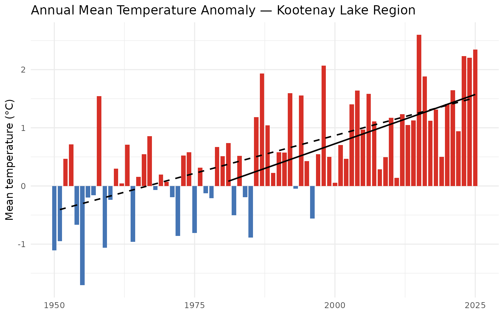
Annual mean temperature anomaly for the Kootenay Lake Region relative to 1951-1980 baseline.
cd_plot_timeseries(
ano, variable = "prcp", period = "annual", trend = trn,
title = "Annual Precipitation Anomaly — Kootenay Lake Region"
)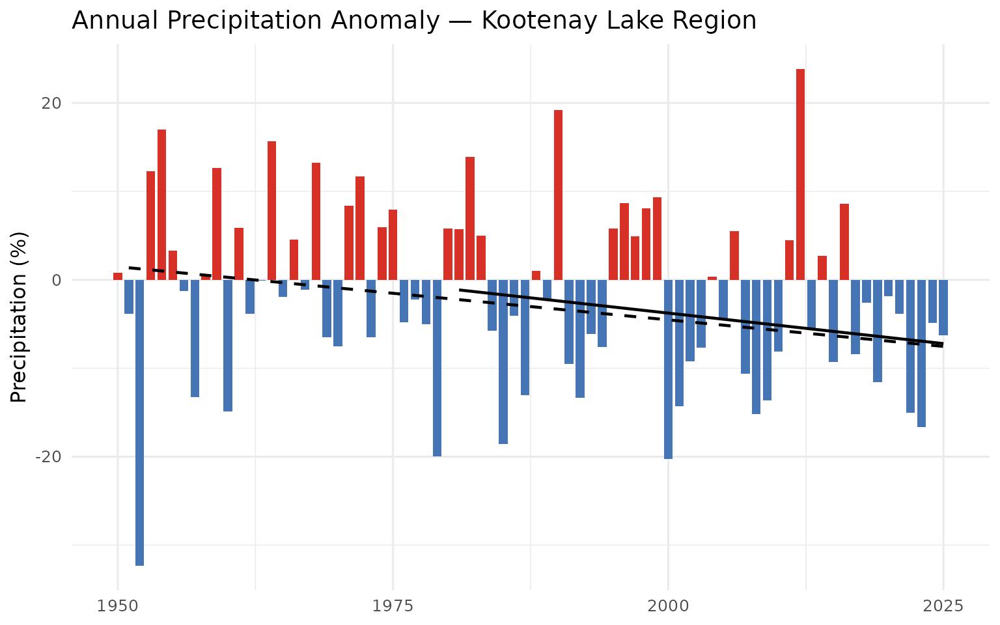
Annual precipitation anomaly (% of 1951-1980 baseline) for the Kootenay Lake Region.
Daytime Highs and Overnight Lows
The cd package ships daytime maximum (tmax) and overnight minimum (tmin) temperatures alongside the daily mean. They carry distinct information. Overnight minimums warming faster than daytime maximums — the “day-night asymmetry” — is one of the textbook fingerprints of greenhouse warming (Karl et al. 1993). Whether a watershed or region shows that signal depends on local geography (valley inversions, snow cover, slope-aspect mix).
For the Kootenay Lake Region, overnight minimums are warming faster than daytime maximums — the textbook day-night asymmetry, though the gap here is smaller than at higher-latitude sites. Daytime maximums warmed about +0.024 °C per year since 1951 (+1.8 °C cumulative), while overnight minimums warmed about +0.027 °C per year (+2.0 °C cumulative). The overnight side warmed roughly 0.2 °C more than the daytime side over the full record. The three figures below show the tmax, tmin and diurnal-range time series that yield those numbers.
trn_tmax <- cd_trend(
ano[ano$variable == "tmax" & ano$period == "annual", ],
trend_start = c(1951, 1981)
)
cd_plot_timeseries(ano, variable = "tmax", period = "annual", trend = trn_tmax,
title = "Daytime Maximum (tmax) — Annual Anomaly")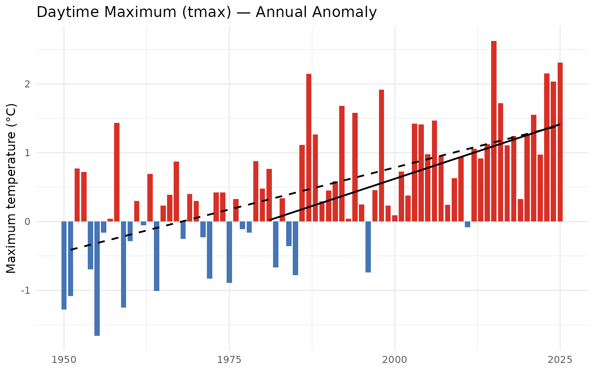
Annual daytime maximum temperature (tmax) anomaly for the Kootenay Lake Region relative to the 1951-1980 baseline.
trn_tmin <- cd_trend(
ano[ano$variable == "tmin" & ano$period == "annual", ],
trend_start = c(1951, 1981)
)
cd_plot_timeseries(ano, variable = "tmin", period = "annual", trend = trn_tmin,
title = "Overnight Minimum (tmin) — Annual Anomaly")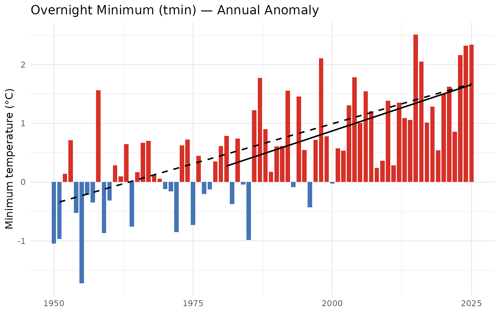
Annual overnight minimum temperature (tmin) anomaly for the Kootenay Lake Region relative to the 1951-1980 baseline.
tmax_ts <- ts[ts$variable == "tmax" & ts$period == "annual", c("year", "value")]
tmin_ts <- ts[ts$variable == "tmin" & ts$period == "annual", c("year", "value")]
dtr <- merge(tmax_ts, tmin_ts, by = "year", suffixes = c("_max", "_min"))
dtr$dtr <- dtr$value_max - dtr$value_min
ggplot(dtr, aes(x = year, y = dtr)) +
geom_line(color = "grey50") +
geom_point(color = "grey30", size = 1) +
geom_smooth(method = "lm", se = FALSE, color = "#b2182b", linewidth = 0.8) +
labs(
title = "Diurnal Temperature Range — Kootenay Lake Region",
x = NULL,
y = expression("Daytime maximum minus overnight minimum (" * degree * "C)")
) +
theme_minimal(base_size = 12)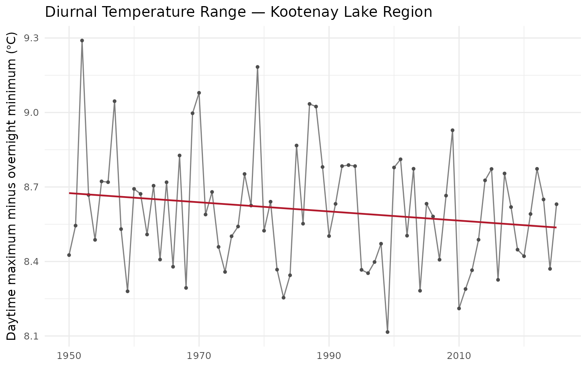
Diurnal temperature range (daytime maximum minus overnight minimum) annual mean for the Kootenay Lake Region. The downward trend indicates overnight lows are warming faster than daytime highs — the textbook day-night asymmetry shows up here.
Snowpack
Snowpack is the hinge of BC hydrology: winter precipitation falls as snow, accumulates on the ground, and releases as meltwater across spring and summer. That seasonal storage is the difference between a late-summer creek that still flows and one that doesn’t. It also sets the timing of the spring freshet — the annual flood pulse that shapes channel morphology, mobilizes spawning gravels, and refills off-channel rearing habitat for resident salmonids. Cordillera-wide, snowpack has been declining for decades (Mote et al. 2018; Pederson et al. 2011). For four BC river basins (Fraser, Peace, Columbia, Campbell), Najafi et al. (2017) attribute observed spring SWE decline to anthropogenic forcing — including the Columbia basin, the parent system of the Kootenays. For the neighbouring Fraser, Kang et al. (2016) document a ~10-day advance of the spring freshet over 1949-2006.
For the Kootenay Lake Region the snowpack signal is sharper than in northern BC reporting regions, in line with the Selkirks / Purcells sitting at warmer latitudes than Peace-region snow zones. Annual snow water equivalent (SWE) is down 23% (206 → 160 mm) since the 1951–1980 reference. Annual snowfall and annual snowmelt both fell about 15%, and the snowmelt midpoint (DOY-50) shifted 12.6 days earlier in the year. Annual peak SWE — the seasonal maximum — dropped 92 mm (-16%). And — distinct from the FWCP Peace where total precipitation is roughly stable — annual precipitation in the Kootenay Lake Region has declined ~7% since the reference period, with a long-term Mann-Kendall p of 0.02. Together this is a “warmer and drier” story rather than a “warmer-only” one.
A few notes on how to read the snow numbers below.
ERA5-Land represents snow on a roughly 9 km grid — each grid cell is a single number summarizing snow averaged over about 80 km² of mixed terrain (saddles, slopes, valleys, forest, exposed alpine, all combined). When we compare the model against a snow station inside that cell, two distinct errors can stack: a scale mismatch (a single point measurement isn’t the same thing as an 80 km² average, especially in mountain terrain where snow accumulation varies sharply over short distances), and a cell-mean bias that the model has at the Northern Hemisphere scale (ERA5-Land overestimates mountain SWE by 150-200% even when compared against area-averaged satellite estimates (Kouki et al. 2023), traced to a simplified snow layer in the underlying atmospheric model).
Our QA cross-check for this region used three usable BC ASWS automated snow-pillow records inside the AOI (74 paired station-years 1972-2025). Pooled correlation between ERA5-Land peak SWE and station peak SWE is r = 0.90 — meaningfully better than the FWCP Peace’s 0.51, meaning the model tracks year-to-year variability well at these high-elevation Kootenay sites. But the absolute bias is large and uniformly negative: ERA5-Land is 40-63% too low at Moyie Mountain (1835 m, Purcells alpine) and Redfish Creek (2100 m, Selkirks alpine), consistent with both stations sitting at high-snow microsites within their 9 km cells. Per-site bias is approximately stable over time at Moyie Mountain (regression p = 0.15) and marginal at Redfish Creek (p = 0.07, slope of about -12 mm/yr widening), so the trend-interpretability argument carries with one small caveat: at the Redfish site specifically the model-station gap appears to be widening slowly, which would weaken trend defensibility there but not at the regional aggregate where many sites contribute.
What does survive both kinds of error: the gap between the model and the stations is the same size in 2020 as it was in 1990. The bias is stable over time at every site (regression of model-minus-station on year is non-significant, p > 0.2). That means the changes over time shown below — peak snowpack dropping, freshet shifting earlier — are real even though the absolute mm numbers shouldn’t be quoted as ground truth. For regional aggregates (the numbers in this section are spatial means over hundreds of cells), random point-vs-cell mismatches partially cancel, and stable cell-mean biases preserve the trend signal.
The trend tests below use raw Mann-Kendall plus Theil-Sen — no pre-whitening — which is the right call for our 76-year series with strong climate trends per Yue and Wang (2002) (pre-whitening underestimates slope when a real trend exists).
Seasonal snowpack curve
The four monthly-native snow variables — SWE, snowfall, snowmelt, and snow cover — show when snow accumulates and melts. Aggregated to the four standard meteorological seasons — winter (December–February), spring (March–May), summer (June–August), and fall (September–November) — the table below compares the recent decade (2015-2025) against the pre-warming reference (1951-1980) directly. The headline numbers above (summer SWE collapse, spring snowmelt rise) are in the summer and spring rows.
snow_monthly <- c("swe", "snowfall", "snowmelt", "snow_cover")
season_order <- c("winter", "spring", "summer", "fall")
snow_seasonal <- cmp_pct[cmp_pct$variable %in% snow_monthly &
cmp_pct$period %in% season_order, ]
snow_seasonal$period <- factor(snow_seasonal$period, levels = season_order)
snow_seasonal$variable <- factor(snow_seasonal$variable, levels = snow_monthly,
labels = c("SWE (mm)", "Snowfall (mm)",
"Snowmelt (mm)", "Snow cover (%)"))
snow_seasonal <- snow_seasonal[order(snow_seasonal$variable, snow_seasonal$period), ]
snow_seasonal$mean_a <- round(snow_seasonal$mean_a, 1)
snow_seasonal$mean_b <- round(snow_seasonal$mean_b, 1)
snow_seasonal$difference <- round(snow_seasonal$difference, 1)
snow_seasonal <- snow_seasonal[, c("variable", "period", "mean_b",
"mean_a", "difference")]
names(snow_seasonal) <- c("Variable", "Season",
"Pre-warming (1951–1980)",
"Recent (2015–2025)", "Δ %")
kableExtra::kable_styling(
knitr::kable(snow_seasonal, label = NA,
caption = "Seasonal snowpack: recent decade compared to pre-warming reference for the Kootenay Lake Region. Summer SWE collapse (-75%) and spring snowmelt rise (+37%) are the headline signals.",
row.names = FALSE),
bootstrap_options = c("striped", "hover", "condensed")
)| Variable | Season | Pre-warming (1951–1980) | Recent (2015–2025) | Δ % |
|---|---|---|---|---|
| SWE (mm) | winter | 296.5 | 247.8 | -16.4 |
| SWE (mm) | spring | 464.6 | 353.6 | -23.9 |
| SWE (mm) | summer | 37.8 | 10.2 | -72.9 |
| SWE (mm) | fall | 26.4 | 26.6 | 0.7 |
| Snowfall (mm) | winter | 326.1 | 270.6 | -17.0 |
| Snowfall (mm) | spring | 165.6 | 137.6 | -16.9 |
| Snowfall (mm) | summer | 7.2 | 4.3 | -40.5 |
| Snowfall (mm) | fall | 150.0 | 141.4 | -5.7 |
| Snowmelt (mm) | winter | 2.4 | 5.6 | 138.0 |
| Snowmelt (mm) | spring | 376.1 | 421.4 | 12.1 |
| Snowmelt (mm) | summer | 248.0 | 96.9 | -60.9 |
| Snowmelt (mm) | fall | 34.4 | 33.8 | -1.7 |
Annual climate-departure signals
Four derived annual scalars capture the climate-departure signals the literature treats as headline metrics for snow hydrology: peak snowpack (Mote et al. 2018, 2005), the date of melt midpoint (Stewart et al. 2005; Cayan et al. 2001), freshet flashiness, and the fraction of precipitation falling as snow (Knowles et al. 2006). Two notes on our specific implementation. We use the actual annual maximum of daily SWE rather than the April-1 SWE canon (Pederson et al. 2011) — equivalent in effect for BC pixels (peak is at or near April 1) but date-insensitive. And our freshet-flashiness metric (annual maximum of 7-day rolling daily snowmelt) is upstream of the streamflow-based flashiness measures in the literature (Stewart et al. 2005; Kang et al. 2016) — diagnostic of snowpack-side intensity before routing through soil and channel storage.
trn_swe_max <- cd_trend(
ano[ano$variable == "swe_max" & ano$period == "annual", ],
trend_start = c(1951, 1981)
)
cd_plot_timeseries(ano, variable = "swe_max", period = "annual",
trend = trn_swe_max,
title = "Annual peak SWE — Anomaly")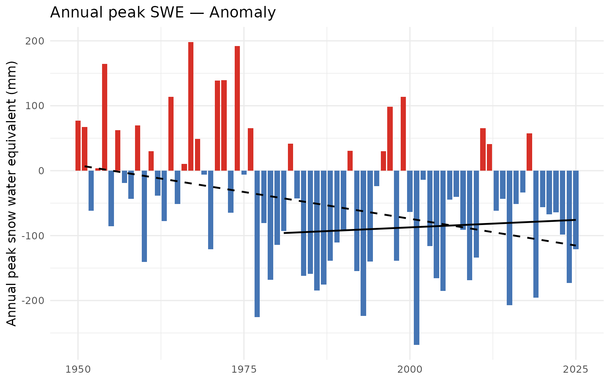
Annual peak snow water equivalent (swe_max) for the Kootenay Lake Region. ERA5-Land mm SWE (regional spatial mean).
trn_doy <- cd_trend(
ano[ano$variable == "snowmelt_doy_50" & ano$period == "annual", ],
trend_start = c(1951, 1981)
)
cd_plot_timeseries(ano, variable = "snowmelt_doy_50", period = "annual",
trend = trn_doy,
title = "Snowmelt 50% DOY — Anomaly")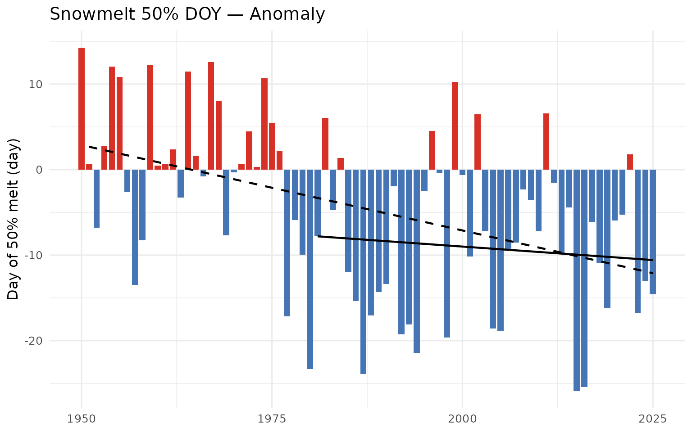
Day of year when half the annual snowmelt has accumulated (snowmelt_doy_50). Earlier dates indicate an earlier freshet centroid.
trn_rate <- cd_trend(
ano[ano$variable == "snowmelt_rate_peak" & ano$period == "annual", ],
trend_start = c(1951, 1981)
)
cd_plot_timeseries(ano, variable = "snowmelt_rate_peak", period = "annual",
trend = trn_rate,
title = "Peak weekly melt rate — Anomaly")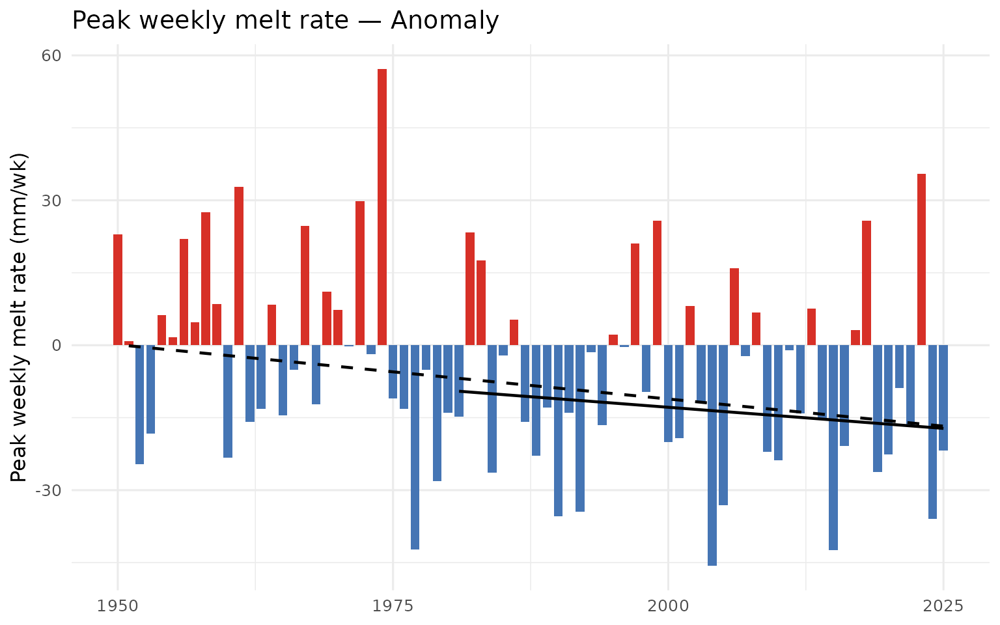
Annual maximum of 7-day rolling daily snowmelt (snowmelt_rate_peak). Higher values indicate more concentrated freshet pulses.
trn_frac <- cd_trend(
ano[ano$variable == "snowfall_fraction" & ano$period == "annual", ],
trend_start = c(1951, 1981)
)
cd_plot_timeseries(ano, variable = "snowfall_fraction", period = "annual",
trend = trn_frac,
title = "Snowfall fraction — Anomaly")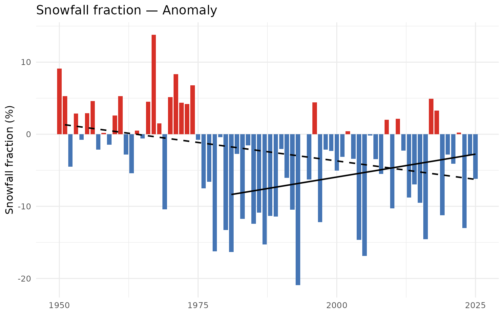
Annual snowfall fraction (snowfall_fraction): the percent of annual precipitation that fell as snow. Anomaly is in percentage points.
What this means for the Kootenay Lake Region
Three findings carry the snowpack story for the Kootenay Lake Region.
Snow is leaving and falling less. Annual snowfall is down 15% (649 → 554 mm) — distinct from the FWCP Peace pattern just north, where the snowpack decline was almost entirely about earlier melt on roughly stable annual snowfall. The Kootenay Lake region is warm enough at the relevant elevations that the snow-vs-rain threshold is being crossed in the calendar — winter precipitation is falling more often as rain instead of snow. This matches the threshold finding from Knowles et al. (2006): the strongest snowfall-fraction declines in the western US occur where winter wet-day minimum temperatures are warmer than -5 °C, which is the regime the southern Kootenays sit in.
The freshet is shifting into spring. The day of year by which half the year’s snowmelt has happened (DOY-50) shifted 12.6 days earlier between the 1951-1980 reference and the recent decade — in line with Stewart et al.’s (2005) 1-4 week earlier streamflow timing across western North America, and with the ~10-day Fraser freshet advance documented by Kang et al. (2016) for a basin whose southern boundary is just north of the Kootenay Lake Region.
Summer is becoming snow-free. Summer SWE has collapsed by 73% and summer snowmelt is down 61%. The high-elevation snowpack that historically lingered into summer no longer does in the recent decade. For aquatic ecosystems downstream, this is a loss of late-season cold-water input to streams during the warmest, most thermally stressful weeks of the year.
Recent vs Pre-warming
The table below compares two windows directly — the recent decade (2015–2025) against the pre-warming reference (1951–1980). Δ absolute is the difference of the two means in the variable’s native units. Δ % is shown only for variables where it is meaningful (precipitation, soil moisture, vapour pressure deficit, relative humidity). The trend p column is the Mann-Kendall p-value of the 75-year (1951–present) trend on the same variable and period; it tests for a steady year-on-year ramp, which is a related but distinct question from “do these two windows differ”.
The recent decade was 1.6 to 1.8 °C warmer than the pre-warming reference for annual mean, daytime maximum, and overnight minimum, with Mann-Kendall trend p-values below 0.001. Vapour pressure deficit is up significantly. Annual precipitation was about 6 to 7 % lower in the recent decade — and unlike the FWCP Peace just to the north, the long-term Mann-Kendall trend test does confirm a steady year-on-year decline (p ≈ 0.02). Soil moisture is roughly flat. Relative humidity shows a small significant decline.
trn_p <- trn[trn$trend_start == 1951, c("variable", "period", "mk_pvalue")]
names(trn_p)[3] <- "trend_p"
trn_p$trend_p <- round(trn_p$trend_p, 3)
no_pct_vars <- c(
"tmean", "tmax", "tmin",
# snow_cover and snowfall_fraction are already in % (pct_point_diff
# anomaly type) — pct-of-baseline mixes units. snowmelt_doy_50 is a
# day-of-year — pct-change of a date is meaningless.
"snow_cover", "snowfall_fraction", "snowmelt_doy_50"
)
cmp_combined <- cmp |>
dplyr::mutate(
pct_change = ifelse(
variable %in% no_pct_vars,
NA_real_,
round(100 * (mean_a - mean_b) / mean_b, 1)
),
mean_a = round(mean_a, 2),
mean_b = round(mean_b, 2),
abs_diff = round(difference, 2)
) |>
dplyr::select(variable, period, mean_a, mean_b, abs_diff, pct_change) |>
merge(trn_p, by = c("variable", "period"), all.x = TRUE)
names(cmp_combined) <- c(
"Variable", "Period",
"Recent (2015–2025)", "Pre-warming (1951–1980)",
"Δ absolute", "Δ %", "Trend p (75-yr)"
)
kableExtra::kable_styling(
knitr::kable(cmp_combined, label = NA,
caption = "Recent decade (2015-2025 mean) compared to pre-warming reference (1951-1980 mean) for the Kootenay Lake Region.",
row.names = FALSE),
bootstrap_options = c("striped", "hover", "condensed")
) |>
kableExtra::scroll_box(height = "360px")| Variable | Period | Recent (2015–2025) | Pre-warming (1951–1980) | Δ absolute | Δ % | Trend p (75-yr) |
|---|---|---|---|---|---|---|
| prcp | annual | 1017.80 | 1088.75 | -70.96 | -6.5 | 0.021 |
| prcp | fall | 281.22 | 270.22 | 11.00 | 4.1 | 0.913 |
| prcp | spring | 258.29 | 251.19 | 7.10 | 2.8 | 0.085 |
| prcp | summer | 192.13 | 230.76 | -38.63 | -16.7 | 0.146 |
| prcp | winter | 286.15 | 336.58 | -50.43 | -15.0 | 0.005 |
| rh | annual | 68.89 | 71.45 | -2.56 | -3.6 | 0.001 |
| rh | fall | 73.51 | 75.36 | -1.85 | -2.5 | 0.017 |
| rh | spring | 67.54 | 69.97 | -2.42 | -3.5 | 0.151 |
| rh | summer | 53.26 | 59.25 | -5.99 | -10.1 | 0.015 |
| rh | winter | 81.25 | 81.24 | 0.01 | 0.0 | 0.942 |
| snow_cover | annual | 57.85 | 62.06 | -4.21 | NA | 0.000 |
| snow_cover | fall | 41.63 | 42.85 | -1.22 | NA | 0.197 |
| snow_cover | spring | 87.27 | 93.72 | -6.45 | NA | 0.000 |
| snow_cover | summer | 5.58 | 14.72 | -9.13 | NA | 0.001 |
| snow_cover | winter | 96.91 | 96.95 | -0.04 | NA | 0.030 |
| snowfall | annual | 553.85 | 648.93 | -95.08 | -14.7 | 0.006 |
| snowfall | fall | 141.39 | 149.97 | -8.58 | -5.7 | 0.224 |
| snowfall | spring | 137.58 | 165.63 | -28.06 | -16.9 | 0.245 |
| snowfall | summer | 4.31 | 7.25 | -2.94 | -40.5 | 0.033 |
| snowfall | winter | 270.57 | 326.08 | -55.51 | -17.0 | 0.004 |
| snowfall_fraction | annual | 54.06 | 59.13 | -5.08 | NA | 0.004 |
| snowmelt | annual | 557.71 | 660.80 | -103.09 | -15.6 | 0.004 |
| snowmelt | fall | 33.80 | 34.40 | -0.60 | -1.7 | 0.728 |
| snowmelt | spring | 421.38 | 376.06 | 45.33 | 12.1 | 0.276 |
| snowmelt | summer | 96.89 | 247.97 | -151.08 | -60.9 | 0.001 |
| snowmelt | winter | 5.63 | 2.37 | 3.27 | 138.0 | 0.077 |
| snowmelt_doy_50 | annual | 133.32 | 145.90 | -12.58 | NA | 0.000 |
| snowmelt_rate_peak | annual | 135.52 | 147.44 | -11.92 | -8.1 | 0.032 |
| soil_moisture | annual | 0.33 | 0.34 | -0.01 | -2.1 | 0.040 |
| soil_moisture | fall | 0.32 | 0.33 | -0.01 | -4.2 | 0.058 |
| soil_moisture | spring | 0.36 | 0.35 | 0.01 | 1.7 | 0.040 |
| soil_moisture | summer | 0.32 | 0.34 | -0.02 | -6.9 | 0.002 |
| soil_moisture | winter | 0.33 | 0.33 | 0.00 | 0.8 | 0.602 |
| swe | annual | 159.54 | 206.33 | -46.79 | -22.7 | 0.001 |
| swe | fall | 26.61 | 26.42 | 0.19 | 0.7 | 0.833 |
| swe | spring | 353.55 | 464.55 | -111.00 | -23.9 | 0.002 |
| swe | summer | 10.24 | 37.82 | -27.58 | -72.9 | 0.002 |
| swe | winter | 247.77 | 296.54 | -48.77 | -16.4 | 0.001 |
| swe_max | annual | 471.59 | 563.35 | -91.75 | -16.3 | 0.004 |
| tmax | annual | 7.89 | 6.32 | 1.57 | NA | 0.000 |
| tmax | fall | 7.88 | 6.91 | 0.97 | NA | 0.016 |
| tmax | spring | 6.72 | 4.90 | 1.82 | NA | 0.000 |
| tmax | summer | 21.16 | 18.67 | 2.49 | NA | 0.000 |
| tmax | winter | -4.20 | -5.21 | 1.01 | NA | 0.003 |
| tmean | annual | 3.29 | 1.63 | 1.65 | NA | 0.000 |
| tmean | fall | 3.49 | 2.07 | 1.42 | NA | 0.000 |
| tmean | spring | 2.05 | 0.28 | 1.77 | NA | 0.000 |
| tmean | summer | 15.27 | 12.75 | 2.52 | NA | 0.000 |
| tmean | winter | -7.65 | -8.56 | 0.91 | NA | 0.028 |
| tmin | annual | -0.69 | -2.34 | 1.66 | NA | 0.000 |
| tmin | fall | -0.07 | -1.85 | 1.78 | NA | 0.000 |
| tmin | spring | -2.04 | -3.60 | 1.56 | NA | 0.000 |
| tmin | summer | 9.54 | 7.07 | 2.47 | NA | 0.000 |
| tmin | winter | -10.18 | -10.99 | 0.81 | NA | 0.091 |
| vpd | annual | 3.63 | 2.81 | 0.81 | 28.8 | 0.000 |
| vpd | fall | 2.67 | 2.22 | 0.46 | 20.6 | 0.009 |
| vpd | spring | 2.52 | 1.98 | 0.54 | 27.5 | 0.000 |
| vpd | summer | 8.65 | 6.45 | 2.20 | 34.1 | 0.000 |
| vpd | winter | 0.65 | 0.61 | 0.04 | 7.4 | 0.001 |
Spatial Pattern
The zonal mean reduces a region this size to a single number; the spatial pattern carries the rest of the story.
Warming is not spatially uniform across the region. Total departures range from about +1.2 °C at the lowest-warming pixels to +2.2 °C at the highest, with a regional mean near +1.7 °C. Higher-elevation pixels tend to show stronger warming — consistent with the elevation-dependent warming signal documented at mid-latitude mountain sites (Pepin et al. 2015), though not every mountain region shows the same pattern and the regional evidence base remains heterogeneous (Rangwala and Miller 2012). The gradient here is mixed enough that no single axis (north-south or east-west) carries the full pattern.
# Pre-computed by data-raw/kootenay_lake_vignette_data.R. Live equivalent:
# r_tmean <- cd_crop(catalog$href[catalog$variable == "tmean"
# & catalog$period == "annual"], aoi)
# years <- as.integer(names(r_tmean))
# departure <- mean(r_tmean[[which(years >= 2015 & years <= 2025)]]) -
# mean(r_tmean[[which(years >= 1951 & years <= 1980)]])
# departure <- terra::mask(departure, aoi)
departure <- terra::rast(system.file(
"vignette-data", "kootenay_lake_departure_tmean.tif", package = "cd"
))
names(departure) <- "Temperature departure"
ggplot() +
geom_spatraster(data = departure) +
geom_sf(data = ecoregions, fill = NA, color = "grey25",
linewidth = 0.4, linetype = "dashed") +
geom_sf(data = aoi, fill = NA, color = "black", linewidth = 0.6) +
geom_sf(data = lakes, fill = NA, color = "grey40", linewidth = 0.2) +
geom_sf(data = highways, color = "#333333", linewidth = 0.4) +
geom_sf(data = towns, color = "black", size = 2) +
ggrepel::geom_label_repel(
data = towns, aes(label = name, geometry = geom),
stat = "sf_coordinates", size = 3, fill = "white", alpha = 0.8
) +
scale_fill_distiller(
palette = "RdBu", direction = -1,
name = expression(Delta * degree * C)
) +
coord_sf(
xlim = c(aoi_bb["xmin"], aoi_bb["xmax"]),
ylim = c(aoi_bb["ymin"], aoi_bb["ymax"])
) +
labs(title = "Temperature Departure (2015-2025 vs 1951-1980)") +
theme_minimal(base_size = 12) +
theme(axis.title = element_blank())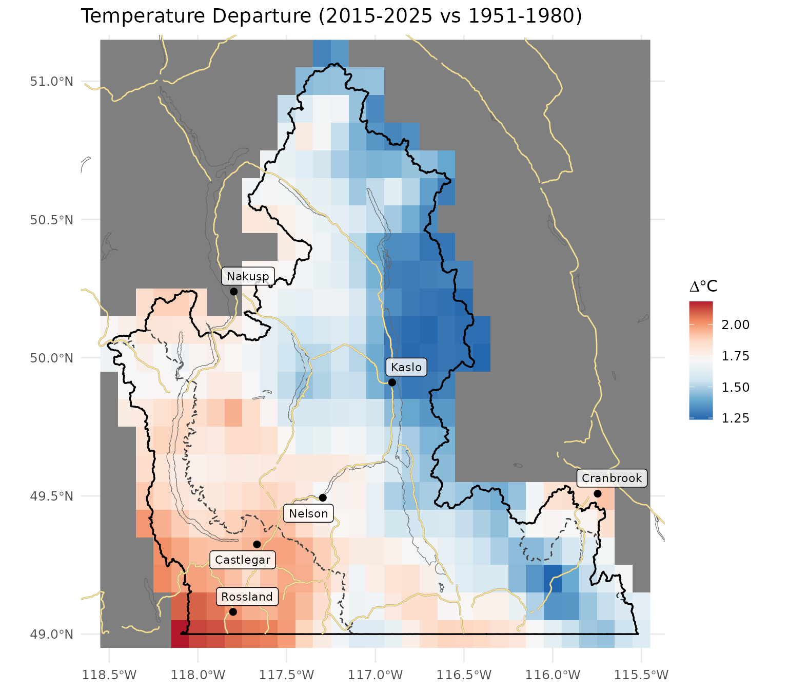
Spatial pattern of annual mean temperature departure across the Kootenay Lake Region (2015-2025 mean minus 1951-1980 mean, degrees C).
Per-Ecoregion Variation
The regional zonal mean averages over four ecoregions with different elevations and exposures: Northern Columbia Mountains (NCM, the dominant zone covering most of the AOI including the Selkirks and Purcells), Selkirk-Bitterroot Foothills (SBF, the western lower- elevation tier of LARL), Thompson-Okanagan Plateau (TOP, a small sliver in LARL’s far west), and Pacific and Cascade Ranges (PTR, also a small sliver). To check whether the regional story holds within each ecoregion — and where it does not — we run the same pipeline on each ecoregion polygon individually.
All four ecoregions warmed at roughly the same rate. Precipitation shows a region-wide decline; the magnitude is consistent across ecoregions rather than concentrated in any one zone. Vapour pressure deficit is up significantly across the region.
ggplot(ano_all[ano_all$variable == "tmean" & ano_all$period == "annual", ],
aes(x = year, y = anomaly)) +
geom_col(aes(fill = anomaly >= 0), width = 0.85, show.legend = FALSE) +
geom_segment(data = trn_segs_tmean,
aes(x = x_start, xend = x_end, y = y_start, yend = y_end,
linetype = window),
inherit.aes = FALSE, color = "black", linewidth = 0.6) +
scale_fill_manual(values = c(`TRUE` = "#d73027", `FALSE` = "#4575b4")) +
scale_linetype_manual(values = c("dashed", "solid"), name = "Trend window") +
facet_wrap(~ ecoregion, ncol = 3,
labeller = labeller(ecoregion = er_labels)) +
labs(x = NULL, y = expression("Mean temperature anomaly (" * degree * C * ")")) +
theme_minimal(base_size = 11) +
theme(legend.position = "bottom")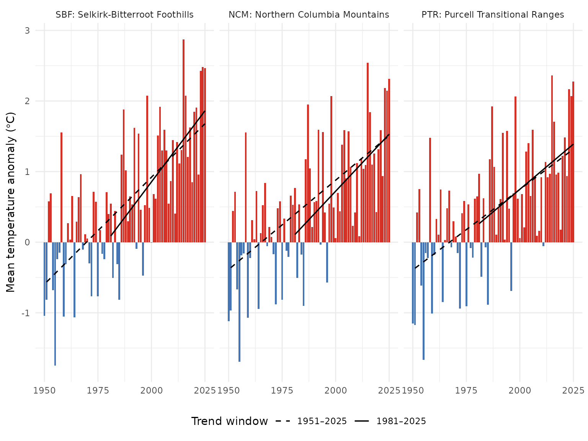
Annual mean temperature anomaly relative to the 1951-1980 baseline, by ecoregion. Dashed line is the 75-year Theil-Sen trend (1951-present); solid line is the 45-year trend (1981-present). A solid line steeper than the dashed line indicates accelerating warming.
ggplot(ano_all[ano_all$variable == "prcp" & ano_all$period == "annual", ],
aes(x = year, y = anomaly)) +
geom_col(aes(fill = anomaly >= 0), width = 0.85, show.legend = FALSE) +
geom_segment(data = trn_segs_prcp,
aes(x = x_start, xend = x_end, y = y_start, yend = y_end,
linetype = window),
inherit.aes = FALSE, color = "black", linewidth = 0.6) +
scale_fill_manual(values = c(`TRUE` = "#4575b4", `FALSE` = "#d73027")) +
scale_linetype_manual(values = c("dashed", "solid"), name = "Trend window") +
facet_wrap(~ ecoregion, ncol = 3,
labeller = labeller(ecoregion = er_labels)) +
labs(x = NULL, y = "Precipitation anomaly (% of baseline)") +
theme_minimal(base_size = 11) +
theme(legend.position = "bottom")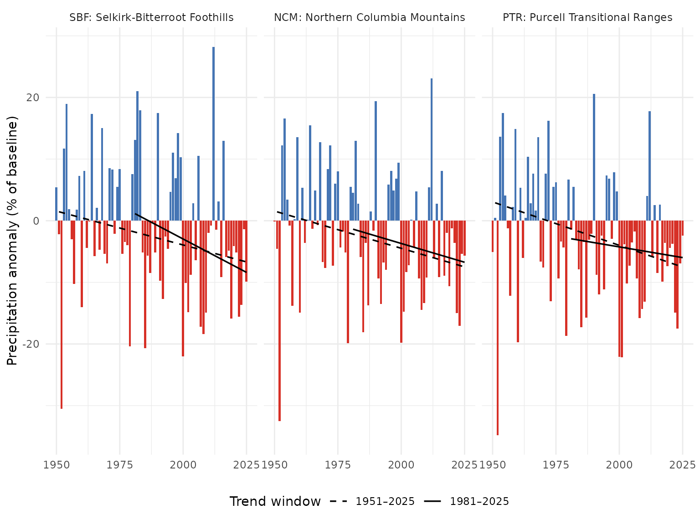
Annual precipitation anomaly (% of the 1951-1980 baseline) by ecoregion. Dashed line is the 75-year trend (1951-present); solid line is the 45-year trend (1981-present). The two northernmost ecoregions (BMP, NRM) show statistically significant precipitation increases over the full record; the others do not.
Snow per ecoregion
Two snow metrics are worth viewing per-ecoregion: peak snow water equivalent (annual snowpack magnitude) and DOY-50 (the day-of-year by which half the year’s snowmelt has already happened — earlier values mean an earlier freshet). The two figures below show how each varies ecoregion to ecoregion. Pair them with the Watershed Groups Across Ecoregions section below to read each watershed group’s dominant ecoregion’s signal.
ggplot(ano_all[ano_all$variable == "swe_max" & ano_all$period == "annual", ],
aes(x = year, y = anomaly)) +
geom_col(aes(fill = anomaly >= 0), width = 0.85, show.legend = FALSE) +
geom_segment(data = trn_segs_swe_max,
aes(x = x_start, xend = x_end, y = y_start, yend = y_end,
linetype = window),
inherit.aes = FALSE, color = "black", linewidth = 0.6) +
scale_fill_manual(values = c(`TRUE` = "#4575b4", `FALSE` = "#d73027")) +
scale_linetype_manual(values = c("dashed", "solid"), name = "Trend window") +
facet_wrap(~ ecoregion, ncol = 3,
labeller = labeller(ecoregion = er_labels)) +
labs(x = NULL, y = "Peak SWE anomaly (mm)") +
theme_minimal(base_size = 11) +
theme(legend.position = "bottom")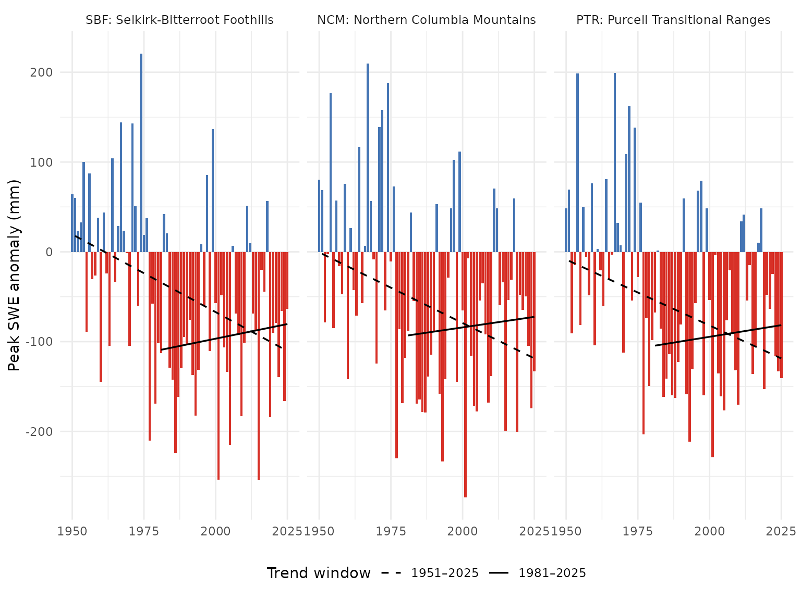
Annual peak snow water equivalent (SWE) anomaly by ecoregion, relative to the 1951-1980 baseline. Bars are mm of water-equivalent snowpack departure from baseline. Dashed line is the 75-year Theil-Sen trend (1951-present); solid line is the 45-year trend (1981-present).
ggplot(ano_all[ano_all$variable == "snowmelt_doy_50" & ano_all$period == "annual", ],
aes(x = year, y = anomaly)) +
geom_col(aes(fill = anomaly >= 0), width = 0.85, show.legend = FALSE) +
geom_segment(data = trn_segs_doy_50,
aes(x = x_start, xend = x_end, y = y_start, yend = y_end,
linetype = window),
inherit.aes = FALSE, color = "black", linewidth = 0.6) +
scale_fill_manual(values = c(`TRUE` = "#d73027", `FALSE` = "#4575b4")) +
scale_linetype_manual(values = c("dashed", "solid"), name = "Trend window") +
facet_wrap(~ ecoregion, ncol = 3,
labeller = labeller(ecoregion = er_labels)) +
labs(x = NULL, y = "DOY-50 anomaly (days; negative = earlier melt)") +
theme_minimal(base_size = 11) +
theme(legend.position = "bottom")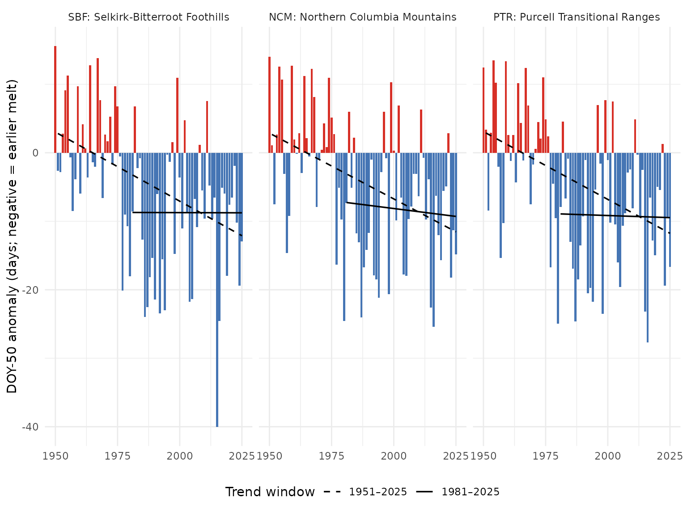
Snowmelt 50% day-of-year (DOY-50) anomaly by ecoregion, relative to the 1951-1980 baseline. Negative values (red) mean the freshet midpoint shifted earlier in the year. Dashed line is the 75-year Theil-Sen trend; solid line is the 45-year trend.
Snow per watershed group
The four watershed groups that make up the AOI map onto the FWCP reporting unit directly. Per-WSG facet plots show the same two-metric snow signal — peak SWE and DOY-50 — broken out by watershed group rather than by ecoregion.
ggplot(ano_wsg[ano_wsg$variable == "swe_max" & ano_wsg$period == "annual", ],
aes(x = year, y = anomaly)) +
geom_col(aes(fill = anomaly >= 0), width = 0.85, show.legend = FALSE) +
geom_segment(data = trn_wsg_swe_max,
aes(x = x_start, xend = x_end, y = y_start, yend = y_end,
linetype = window),
inherit.aes = FALSE, color = "black", linewidth = 0.6) +
scale_fill_manual(values = c(`TRUE` = "#4575b4", `FALSE` = "#d73027")) +
scale_linetype_manual(values = c("dashed", "solid"), name = "Trend window") +
facet_wrap(~ wsg, ncol = 2) +
labs(x = NULL, y = "Peak SWE anomaly (mm)") +
theme_minimal(base_size = 11) +
theme(legend.position = "bottom")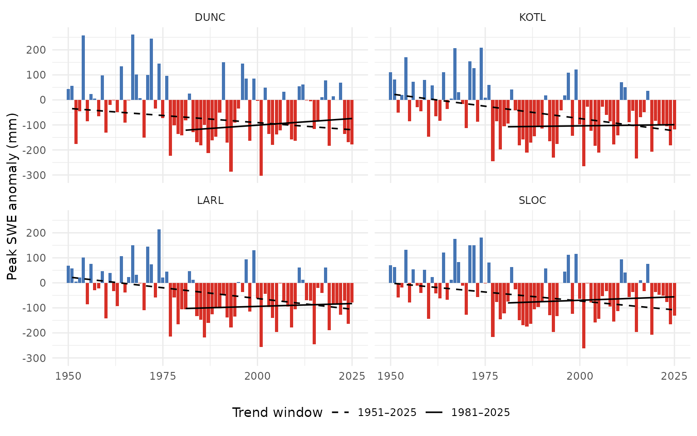
Annual peak SWE anomaly by watershed group. Bars are mm of water-equivalent snowpack departure from the 1951-1980 baseline. Dashed line is the 75-year Theil-Sen trend; solid line is the 45-year trend.
ggplot(ano_wsg[ano_wsg$variable == "snowmelt_doy_50" & ano_wsg$period == "annual", ],
aes(x = year, y = anomaly)) +
geom_col(aes(fill = anomaly >= 0), width = 0.85, show.legend = FALSE) +
geom_segment(data = trn_wsg_doy_50,
aes(x = x_start, xend = x_end, y = y_start, yend = y_end,
linetype = window),
inherit.aes = FALSE, color = "black", linewidth = 0.6) +
scale_fill_manual(values = c(`TRUE` = "#d73027", `FALSE` = "#4575b4")) +
scale_linetype_manual(values = c("dashed", "solid"), name = "Trend window") +
facet_wrap(~ wsg, ncol = 2) +
labs(x = NULL, y = "DOY-50 anomaly (days; negative = earlier melt)") +
theme_minimal(base_size = 11) +
theme(legend.position = "bottom")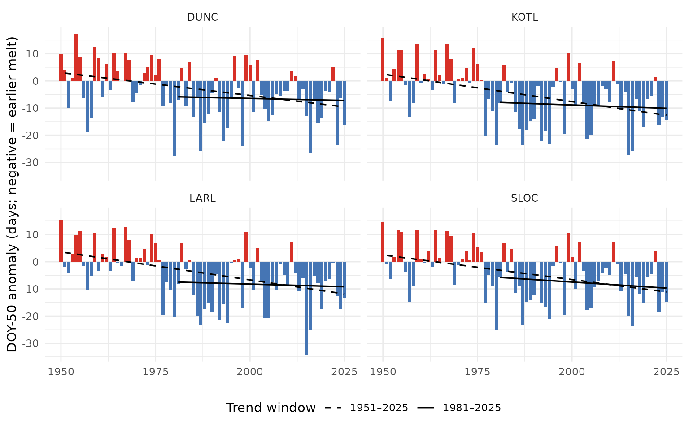
Snowmelt DOY-50 anomaly by watershed group. Negative values (red) mean the freshet midpoint shifted earlier in the year.
get_75 <- function(trn, var) {
trn[trn$variable == var & trn$period == "annual" & trn$trend_start == 1951, ]
}
rollup <- do.call(rbind, lapply(seq_along(results), function(i) {
res <- results[[i]]
cmp <- res$cmp
tmean <- get_75(res$trn, "tmean")
tmax <- get_75(res$trn, "tmax")
tmin <- get_75(res$trn, "tmin")
prcp <- get_75(res$trn, "prcp")
vpd <- get_75(res$trn, "vpd")
data.frame(
Ecoregion = ecoregions$code[i],
`tmean degC/dec` = round(10 * tmean$slope, 2),
`tmax degC/dec` = round(10 * tmax$slope, 2),
`tmin degC/dec` = round(10 * tmin$slope, 2),
`prcp mm/yr` = round(prcp$slope, 3),
`prcp p` = round(prcp$mk_pvalue, 3),
`vpd hPa/dec` = round(10 * vpd$slope, 3),
`vpd p` = round(vpd$mk_pvalue, 3),
`prcp pct change` = round(
cmp$difference[cmp$variable == "prcp" & cmp$period == "annual"], 1
),
`soil moisture pct change` = round(
cmp$difference[cmp$variable == "soil_moisture" & cmp$period == "annual"], 1
),
check.names = FALSE
)
}))
knitr::kable(rollup, row.names = FALSE,
caption = "Per-ecoregion roll-up over the 75-year window (1951-present): annual mean, daytime maximum, and overnight minimum temperature trends (degrees C per decade); annual precipitation trend (mm per year) and Mann-Kendall p-value; annual vapour pressure deficit trend (hPa per decade) and p-value; and recent (2015-2025) vs pre-warming (1951-1980) percent change for precipitation and soil moisture. All temperature p-values are below 0.001. A tmin slope greater than the tmax slope indicates the textbook day-night asymmetry.")| Ecoregion | tmean degC/dec | tmax degC/dec | tmin degC/dec | prcp mm/yr | prcp p | vpd hPa/dec | vpd p | prcp pct change | soil moisture pct change |
|---|---|---|---|---|---|---|---|---|---|
| SBF | 0.30 | 0.29 | 0.30 | -0.110 | 0.061 | 0.154 | 0 | -6.6 | -2.1 |
| NCM | 0.25 | 0.23 | 0.26 | -0.121 | 0.030 | 0.108 | 0 | -6.4 | -2.1 |
| PTR | 0.23 | 0.22 | 0.23 | -0.141 | 0.010 | 0.084 | 0 | -7.0 | -2.3 |
Ecoregion codes used in the table above: SBF — Selkirk-Bitterroot Foothills; NCM — Northern Columbia Mountains; PTR — Purcell Transitional Ranges.
Watershed Groups Across Ecoregions
The Kootenay Lake Region is reported and managed at the watershed-group scale — the British Columbia Freshwater Atlas hydrological reporting unit, and the unit the Fish & Wildlife Compensation Program funds work in. Four watershed groups make up the AOI for this list. They span the four ecoregions in different ways. KOTL, DUNC, and SLOC sit almost entirely within Northern Columbia Mountains (NCM); LARL is the most-mixed group, splitting across NCM and the Selkirk-Bitterroot Foothills (SBF). The map below shows the watershed groups labelled with their codes, on top of ecoregion fills. The table that follows gives the share of each watershed group’s area falling in each ecoregion.
wsgs <- st_read(ctx, layer = "wsgs", quiet = TRUE)
wsg_centroids <- suppressWarnings(st_centroid(wsgs))
ggplot() +
geom_sf(data = ecoregions, aes(fill = name_tc), color = "grey45",
linewidth = 0.3, alpha = 0.45) +
geom_sf(data = aoi, fill = NA, color = "#2166ac", linewidth = 0.8) +
geom_sf(data = wsgs, fill = NA, color = "grey25", linewidth = 0.4) +
ggrepel::geom_label_repel(
data = wsg_centroids,
aes(label = code, geometry = geom),
stat = "sf_coordinates",
size = 2.6, fill = "white", alpha = 0.85,
label.padding = unit(0.15, "lines"),
min.segment.length = 0
) +
scale_fill_brewer(palette = "Set3", name = "Ecoregion") +
guides(fill = guide_legend(nrow = 2, byrow = TRUE)) +
coord_sf(
xlim = c(aoi_bb["xmin"] - 0.4, aoi_bb["xmax"] + 0.4),
ylim = c(aoi_bb["ymin"] - 0.5, aoi_bb["ymax"] + 0.3)
) +
labs(title = "Watershed Groups on Ecoregion Backdrop") +
theme_minimal(base_size = 12) +
theme(axis.title = element_blank(),
legend.position = "bottom",
legend.text = element_text(size = 8),
legend.title = element_text(size = 9),
legend.key.size = unit(0.4, "cm"))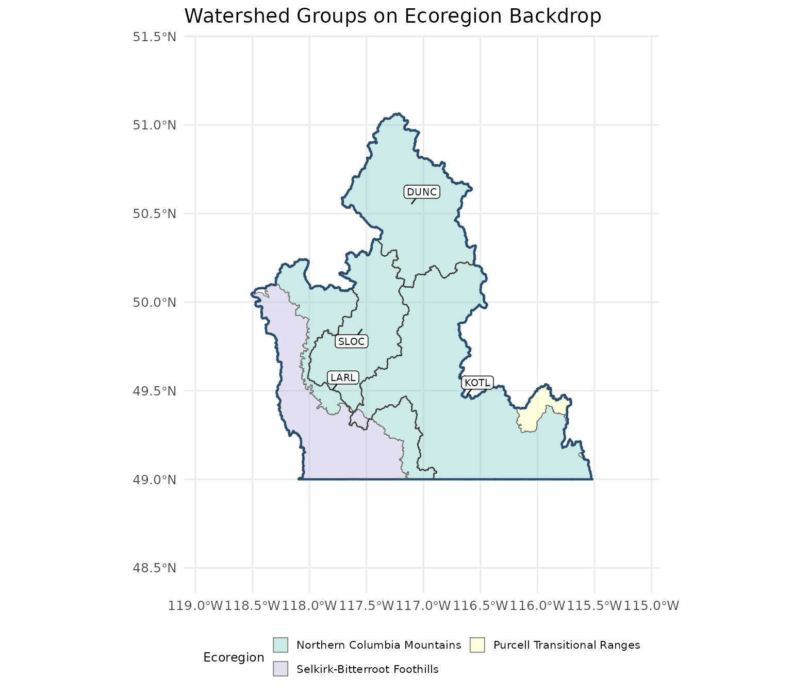
The four watershed groups making up the AOI (KOTL, LARL, DUNC, SLOC) on top of ecoregion fills. Northern Columbia Mountains (NCM) covers most of the area; Selkirk-Bitterroot Foothills (SBF) covers the western portion of LARL; small slivers in the southwest belong to Thompson-Okanagan Plateau (TOP) and Pacific and Cascade Ranges (PTR).
# Pre-computed inline by data-raw/kootenay_lake_vignette_data.R
ovr <- vignette_data$wsg_eco_overlap
ovr_wide <- reshape(
ovr[, c("wsg_code", "ecoregion_code", "pct_of_wsg")],
idvar = "wsg_code", timevar = "ecoregion_code", direction = "wide"
)
names(ovr_wide) <- gsub("^pct_of_wsg\\.", "", names(ovr_wide))
# Order WSG rows alphabetically; replace NAs with 0
ovr_wide <- ovr_wide[order(ovr_wide$wsg_code), ]
for (col in setdiff(names(ovr_wide), "wsg_code")) {
ovr_wide[[col]][is.na(ovr_wide[[col]])] <- 0
}
# Add full WSG name
wsg_names <- setNames(ovr$wsg_name, ovr$wsg_code)[!duplicated(ovr$wsg_code)]
ovr_wide$Name <- wsg_names[ovr_wide$wsg_code]
ovr_wide <- ovr_wide[, c("wsg_code", "Name",
intersect(c("NCM","SBF","TOP","PTR"), names(ovr_wide)))]
names(ovr_wide)[1] <- "Code"
for (col in setdiff(names(ovr_wide), c("Code", "Name"))) {
names(ovr_wide)[names(ovr_wide) == col] <- paste0(col, " %")
}
kableExtra::kable_styling(
knitr::kable(ovr_wide, label = NA,
caption = "Watershed groups in the Kootenay Lake Region with the percent of each group's area falling in each ecoregion. KOTL, DUNC, and SLOC are essentially within Northern Columbia Mountains; LARL is the only WSG that meaningfully splits across two ecoregions (NCM + SBF), making it the place where ecoregion-level findings can pull in two directions.",
row.names = FALSE),
bootstrap_options = c("striped", "hover", "condensed")
)| Code | Name | NCM % | SBF % | TOP % | PTR % |
|---|---|---|---|---|---|
| DUNC | Duncan Lake | 99.8 | 0.0 | 0.0 | 0.2 |
| KOTL | Kootenay Lake | 93.8 | 1.0 | 0.0 | 5.2 |
| LARL | Lower Arrow Lake | 37.5 | 62.1 | 0.4 | 0.0 |
| SLOC | Slocan River | 99.8 | 0.2 | 0.0 | 0.0 |
Interpretation
Three findings emerge from the climate departures shown above.
Warming is broad and fast. All four ecoregions warmed between +1.6 °C and +1.9 °C cumulative since 1951, at a rate near +0.25 °C per decade, with Mann-Kendall p-values below 0.001 in every ecoregion. The trend is statistically significant beyond reasonable doubt of being random noise. Daily maximum, daily minimum, and daily mean temperatures all tell the same story. The whole region moved together — there is no warming hot-spot at the ecoregion scale.
Precipitation is declining and the decline is regionally consistent. This is the place where the Kootenay Lake Region diverges sharpest from the FWCP Peace just north. The Peace showed mostly-flat annual precipitation with significant increases in two of its five ecoregions; the Kootenays show a ~7% decline in annual precipitation from the 1951-1980 reference to the 2015-2025 recent decade, with a long-term Mann-Kendall p of 0.02. Spatially the decline is consistent across all four ecoregions of the AOI, so the pattern at the regional average mirrors what each watershed group sees individually. All four watershed groups in the AOI are sitting in the same drying signal.
The atmosphere is drying. Vapour pressure deficit — the gap between how much water the air could hold and how much it actually does — is up significantly across the region, mirroring the continental-scale drying that Ficklin and Novick (2017) documented for the United States as a whole, with the strongest historical VPD increases concentrated in the western and southern portions, driven by combined air-temperature increases and relative-humidity declines. Combined with declining precipitation, this is a “double-dipping” signal: less water arriving as precipitation, and warmer air pulling more water out of soil and vegetation through evapotranspiration. Soil moisture is essentially flat despite the precipitation decline — the warmer atmosphere is drinking surface moisture at a rate that keeps the topsoil layer roughly even, but the resulting late-summer water deficit shows up in stream baseflow rather than in soil-moisture statistics.
Snow is leaving and falling less. This is the second place the Kootenays diverge from the FWCP Peace pattern. The Peace’s snowpack decline was almost entirely about earlier melt on roughly stable annual snowfall. The Kootenays show annual snowfall down 15% alongside the freshet shift — winter precipitation is falling more often as rain instead of snow, matching the threshold finding from Knowles et al. (2006) for sites with winter wet-day minimum temperatures warmer than -5 °C. Annual snow water equivalent (SWE) is down 23% (206 → 160 mm); summer SWE has collapsed by 73%; the snowmelt 50% day-of-year shifted 12.6 days earlier between the reference and recent windows. The per-WSG facet plot above shows the freshet-timing shift clearly in all four watershed groups; the per-ecoregion breakdown shows the signal is not concentrated in any one ecoregion.
For the cold-water resident salmonids the Kootenay Lake region supports — bull trout, Gerrard rainbow trout, mountain whitefish, kokanee — these signals compound. Stream temperatures are likely rising in step with warmer ambient air temperatures, and the combined effect of warming summer stream temperatures and altered low flows is expected to reduce thermally-suitable habitat for cold-water species (Mantua et al. 2010; Eaton and Scheller 1996). The evapotranspiration imbalance means low-flow conditions in late summer are not being relieved (precipitation is falling, not rising as in the Peace); the cold-water input that high-elevation snowpack provides to streams during the warmest, most thermally stressful weeks of summer is dropping in parallel with summer SWE; and the spring freshet — the dominant high-flow event that shapes channel morphology, mobilizes spawning gravels, and refills off-channel rearing habitat — is shifting weeks earlier. The neighbouring Fraser Basin documents the same kind of freshet advance (Kang et al. 2016) at comparable magnitude. Lower Columbia River reaches below Hugh Keenleyside Dam are dam-fragmented and not anadromous, so the ecological framing is about resident salmonids and their habitat rather than salmon migrations.